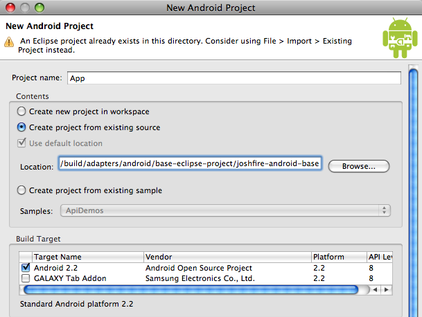
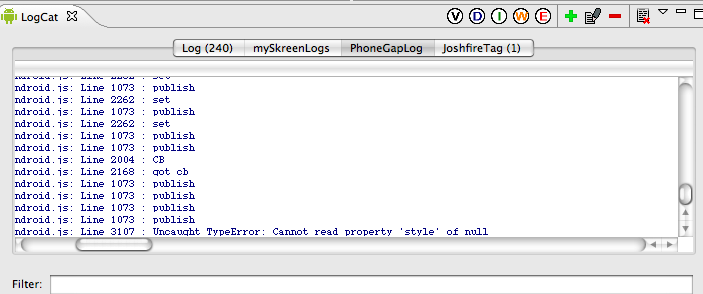

Note 1 : This has been validated with a 2.2 (froyo) android tablet. There is numerous versions of the Android OS running in the wild, and even the development environment could change from one major version to another. Always refer to the official android documentation.
Note 2 : Using real devices to test the application is almost mandatory.
install an Eclipse plugin (you can do without it in command line)
launch Eclipse, go to Help > Install new Software
paste https://dl-ssl.google.com/android/eclipse/ in the text input
check the “Developer tools”, hit “next” two times then “finish” then “ok” and finally restart Eclipse
get the Android SDK on http://developer.android.com/sdk/index.html
reference it in Eclipse : go to Eclipse / Preferences / Android / SDK Location and hit the browse button
choose the the Android Version of the device you are targeting. Eg: for the Samsung Galaxy Tab V1, it's 2.2 (or 8)
Check environment
Let‘s start with an hello world example on a real device
File > New > Project and chose Android Project
fill the fields. Eg for the Samsung Galaxy Tab V1:
check the targets Android 2.2 or Galaxy tab addon
min SDK version is 8
Edit android manifest.xml, set debuggable to true
Then use this code in the main class (in src):
import android.app.Activity;
import android.widget.TextView;
import android.os.Bundle;
public class hello extends Activity {
@Override
public void onCreate(Bundle savedInstanceState) {
super.onCreate(savedInstanceState);
//setContentView(R.layout.main);
TextView tv = new TextView(this);
tv.setText(“Hello, Android”);
setContentView(tv);
}
}
Finally:
hit run
if the android device is connected and in debugging mode (Parameters > Applications > Development > check USB debug), you should see it in the device list
Hit “ok”, look at your hello world on your device
Building a Joshfire application for Android
We provide you a base project. Open your configured Eclipse and create a new "Android Project" and select "create project from existing source".

Start from the base project
Indicate the joshfire/build/adapters/android/base-eclipse-project/joshfire-android-base. Then as above:
check the targets Android 2.2 or Galaxy tab addon
min SDK version is 8
Edit android manifest.xml, set debuggable to true
Back in your project :
Check you have a build/build.js file configured for your android adapter
run fab optimize method to generate the compiled files in the export directory
Copy the content of *-android.js and *-android.css into the two eclipse files : assets/www/myapp.js and assets/www/myapp.css
Choose Window > Open perspective > DDMS and from there hit the debug button. You should see the logs of your application

The javascript logs and errors in the Eclipse console